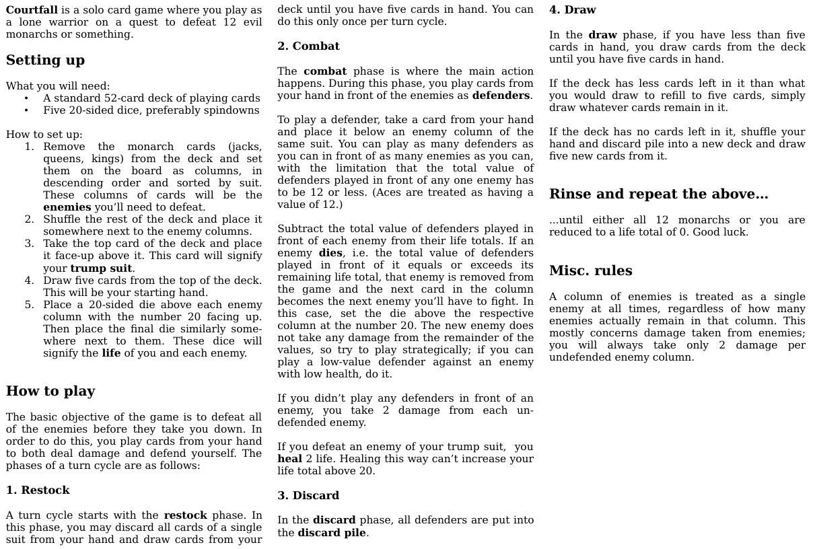

| Status | Finished |
| Year | 2026 |
| Genre | Card game |
| Engine | N/A |
Courtfall is a solo card game where you play as a warrior trying to take down a dozen monarchs. But
what did those monarchs do to you to deserve such a fate? Who cares? It's a card game.
Similarly to my other card games Pareboal and Desturado,
Courtfall is played with a standard 52-card deck of playing cards, as well as a selection of 20-sided dice. The
rules are simple enough to fit onto a single A4-sized sheet, but there's a surprising amount of strategy to
trying to keep yourself alive while taking down your enemies. The cards you play are essentially both your offense
and defense - you play cards in front of monarchs of the same suit in order to deal damage equal to their total
value and also keep yourself from taking damage. Out of the card games I've designed so far, I've got to admit that
this one is my favorite conceptually.